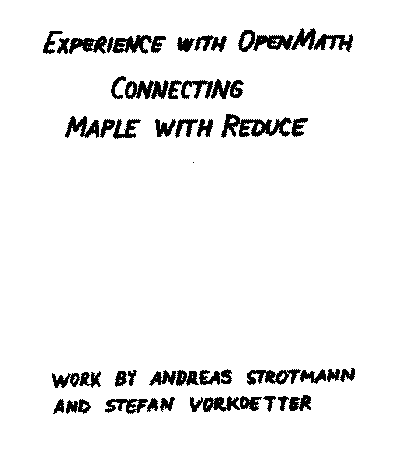
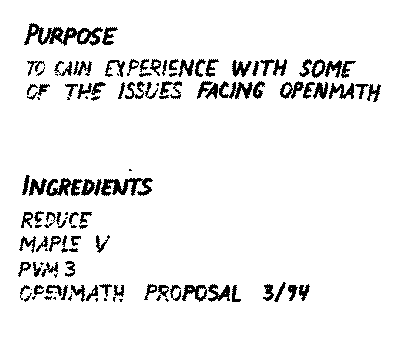
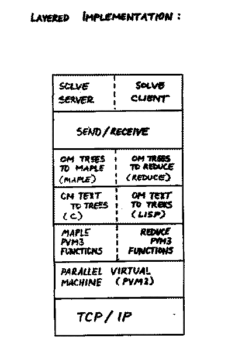
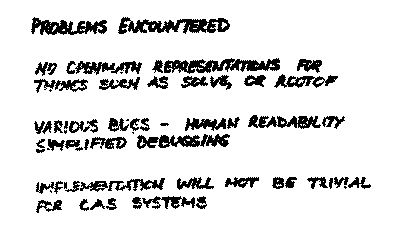
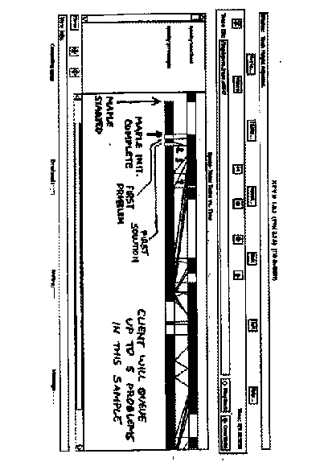

S. Vorkoetter: Experiences with OpenMath (demo REDUCE <--> Maple)
Slides presented at OpenMath Workshop 3 by Stefan Vorkoetter.

(full size, 5k)
(original, 8k)

(full size, 6k)
(original, 10k)

(full size, 12k)
(original, 17k)

(full size, 6k)
(original, 11k)

(full size, 21k)
(original, 30k)
This page is part of the OpenMath Web archive,
and is no longer kept up to date.